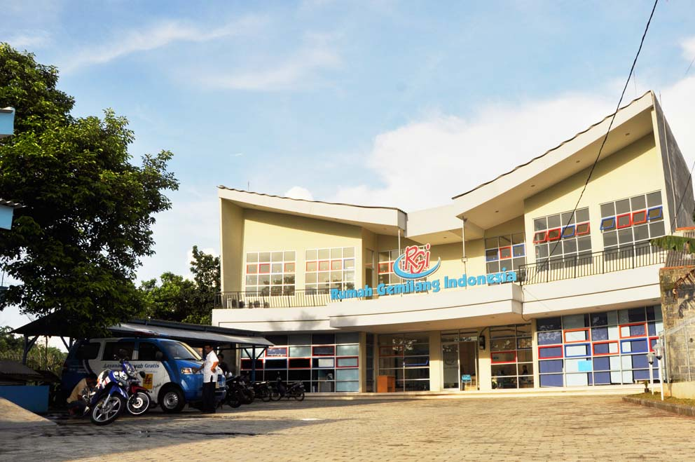

Rumah Gemilang Indoesia
Rumah Gemilang Indonesia (RGI), berdiri di lahan wakaf seorang donatur seluas 1.600 meter persegi di Kampung Kebon Kopi, Kelurahan Pengasinan, Kecamatan Sawangan, Kota Depok. RGI, sebuah unit program pemberdayaan dan pusat pelatihan (empowering and training center) di bawah direktorat Program Al-Azhar Peduli Ummat. Secara resmi, RGI mulai beroperasi se jak 1 Juni 2009 dengan melakukan sosialisasi kepada masyarakat di wilayah Kec. Sawangan Kota Depok.
Sebagai bagian dari program pemberdayaan Al-Azhar Peduli Ummat, RGI mengadopsi platform pesantren, tapi fokus pada penyelenggaraan pendidikan non formal dalam kemasan short course (kursus singkat). Perpaduan ini bertujuan agar para peserta pelatihan RGI tidak hanya menyerap pengetahuan dan keterampilan unggul yang menjadi pondasi masa depan mereka, tapi juga memiliki pengetahuan dan dasar akidah iman yang baik.
Bukan perkara mudah mewujudkan gambar rencana menjadi bangunan fungsional. Estimasi biaya pembangunan mencapai angka Rp 3 miliar. Belum termasuk biaya untuk fasilitas dan operasional. Al-Azhar Peduli Ummat pun mengundang donatur yang peduli terhadap pendidikan bagi yatim dan dhuafa untuk berpartisipasi dalam pembangunan RGI. Caranya, delapan ruang kelas di lantai dua dan empat kelas di lantai satu, dilelang dalam akad wakaf tunai masing-masing eharga Rp 100 juta. Selain mendapatkan sertifikat, pemenang lelang berhak memberikan nama ruang, sesuai yang dikehendaki. Hall dan perpustakaan di lantai 1, juga dilelang dengan nilai masing-masing Rp 200 juta.
Kini, bangunan megah dengan fasilitas pelatihan yang menuju sempurna itu, sudah dimanfaatkan sebagai training center untuk remaja usia produktif yang putus sekolah maupun yang tak mampu melanjutkan ke jenjang tinggi. Komunitas masyarakat dan pesantren juga memetik manfaat dari keberadaan RGI ini. Mereka secara gratis dapat belajar pengetahuan dan keterampilan yang selama ini hanya dapat dinikmati kalangan ekonomi mampu.
Dalam peran empowering, RGI disiapkan sebagai pusat pemberdayaan dan entrepreneur. Seluruh produk yang dihasilkan RGI, disiapkan sebagai produk bisnis yang akan menopang operasional RGI dan menjadi wahana bagi para peserta RGI memasarkan hasil karyanya. Tujuannya meningkatkan taraf ekonomi alumni RGI untuk mendapatkan kehidupan lebih baik, mandiri, berjiwa sosial, dan memiliki nilai-nilai agama dengan baik.